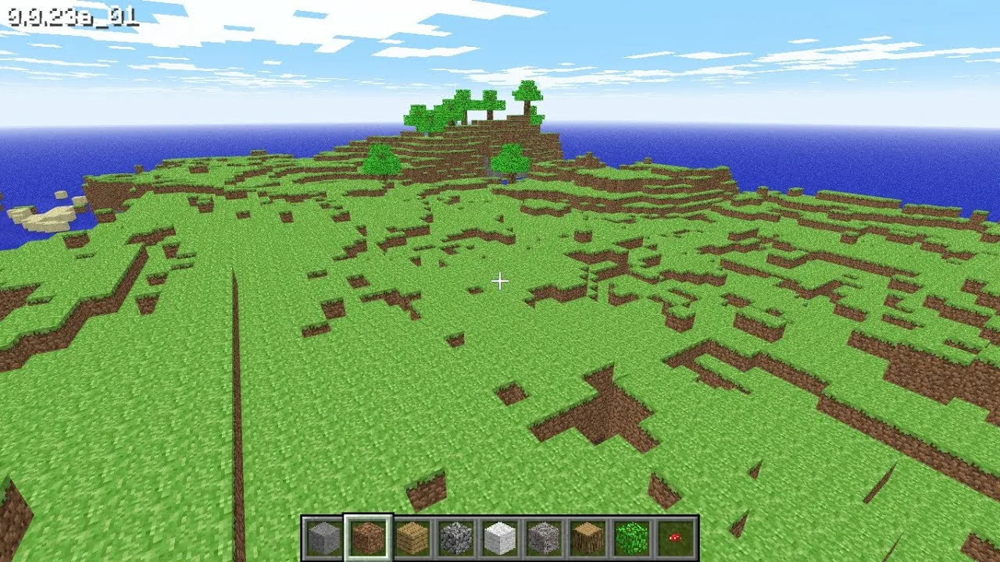
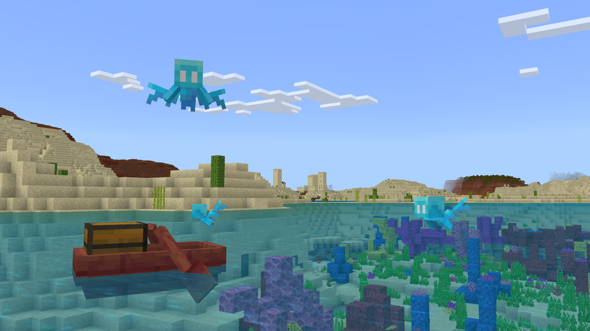

Главная
Новости
Разработчики
История
Моды
MINECRAFT
Мир бесконечных возможностей
Первая и последняя версии Minecraft

Классическая версия (Alpha)

Современная версия (1.20+)
Проблемы и плюсы старого Minecraft
Минусы:
Проблемы с оптимизацией: старые версии часто страдали от плохой оптимизации
Меньшее количество контента: меньше блоков, мобов и механик
Визуальные и технические баги
Атмосфера одиночества и тревоги
Отсутствие обучения и гайдовой поддержки
Плюсы:
Простота и понятность
Уникальная атмосфера и генерация мира
Более хардкорный геймплей
Бесконечные миры для творчества
Поддержка модификаций
Проблемы и плюсы нового Minecraft
Минусы:
Производительность и оптимизация
Технические сбои и краши
Сложности с обновлениями
Требование учётной записи Microsoft
Проблемы с сетевыми серверами
Плюсы:
Новая система обновлений
Уникальные биомы и новые блоки
Новые мобы и NPC
Улучшенная графика
Развитие мультиплеера